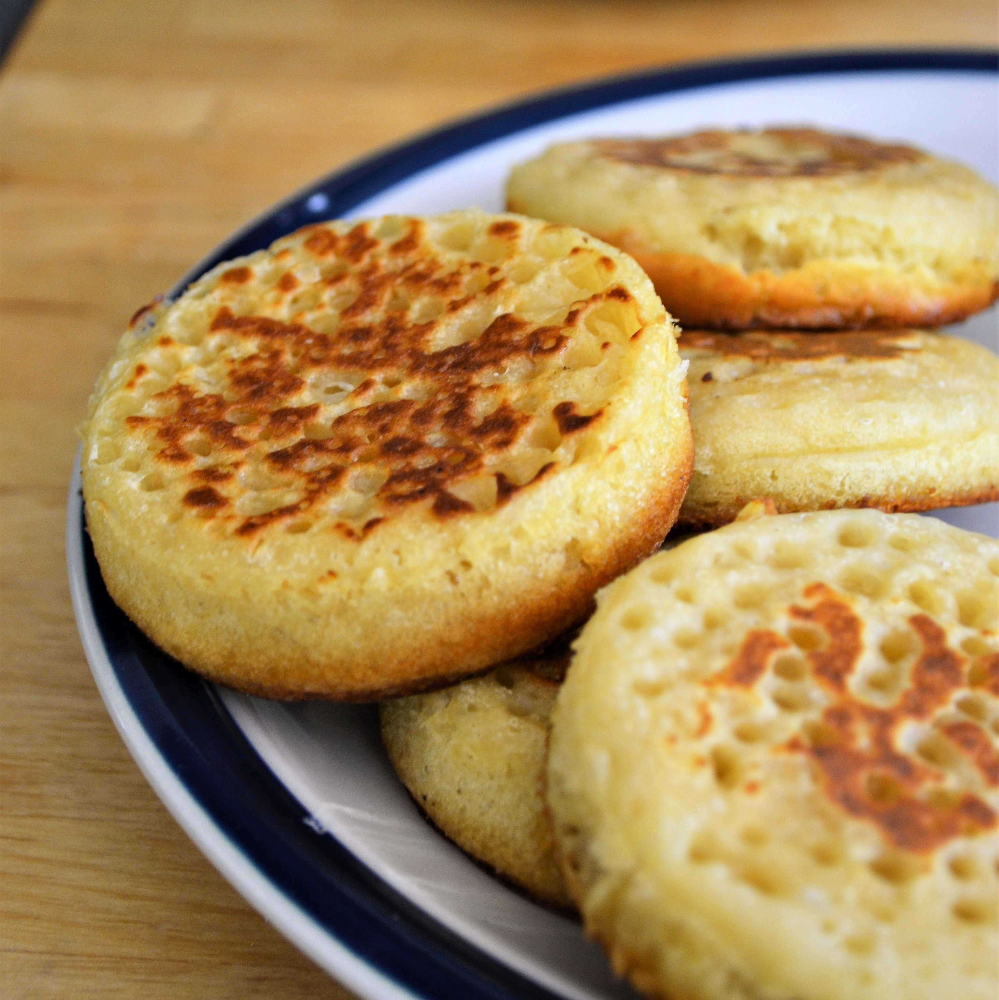
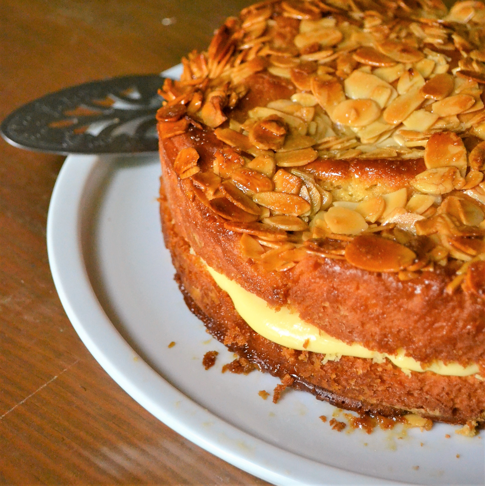
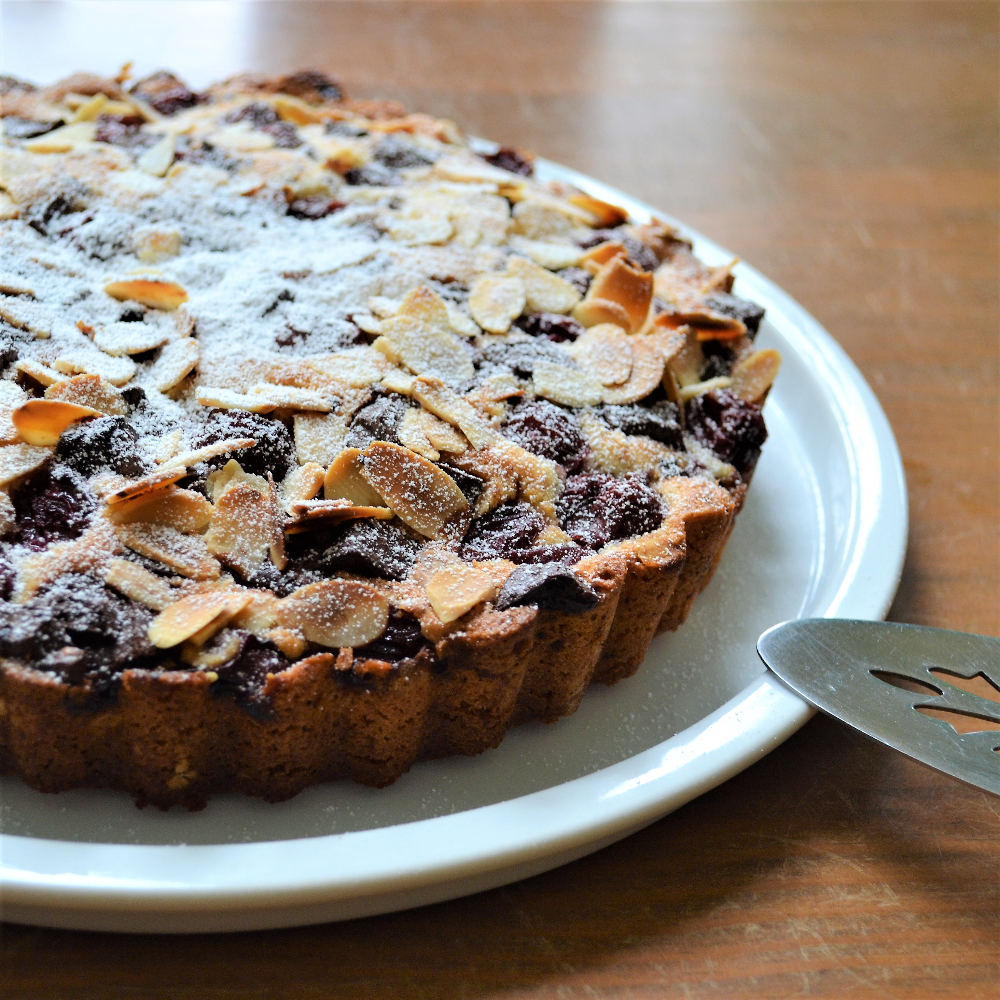
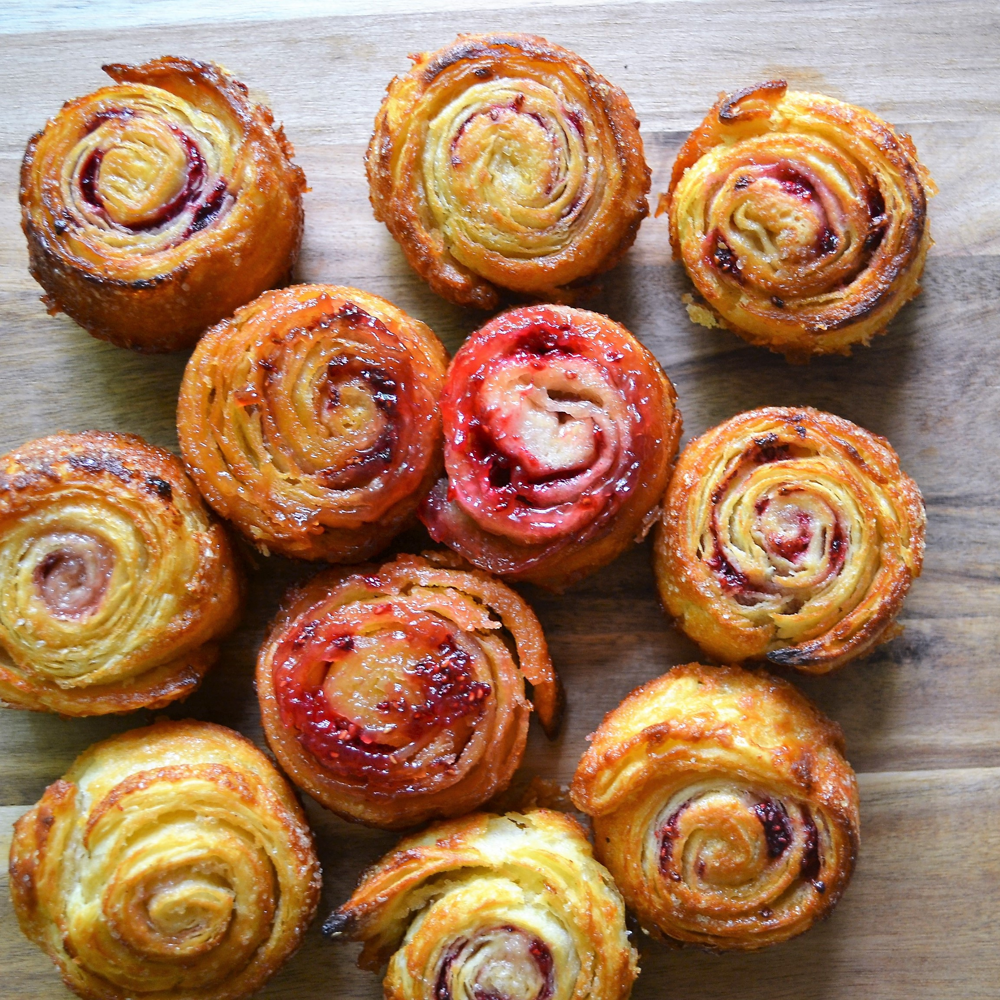

All of our cakes and crumpets are made with an eye for detail - and love, of course! We only use ingredients that you would use in your own kitchen.
-
Crumpets
Our crumpets are nothing like those rubbery things you get at the supermarket. They're made with cast iron rings—the traditional way—so they're fizzy and yeasty, crisp on the outside and light as a cloud on the inside. You can keep them in the fridge or freeze them and when you're ready, you can give them a go in the toaster and serve them with your favourite toppings.
They're like nothing you've had before—try one and we guarantee you'll never look back!
-
Beesting
Inspired by a trip to the land of fairy tales and cakes. If you order this elsewhere, you'll often get a pale imitation made with chemical raising agents, but our cake is risen with yeast and you'll notice the difference. Just picture mellow custard squeezed between two layers of puffy brioche and topped with almonds caramelised in honey.
It's like a honey joy—let your inner child go crazy!
-
Almond, Chocolate and Cherry Torte
This one is topped with roasted almonds and dusted with icing sugar. It's as pretty as a picture, but it's on the inside that you'll see the fun really begins. Cut a slice out of it and you'll find the biscuity base filled with cherry and dark chocolate. Take bite after bite and savour the bursts of sweet and sour.
Open the box and wait for the collective gasp—this is a party favourite!
-
Raspberry Swirls
We laminate butter over and over between layers of pastry, and roll it all up in sugar and raspberries. Then we pop these swirls in the oven and don't take them out until they're golden, flaky and oozing with caramelised raspberry.
Even more fun than a jam-filled croissant!